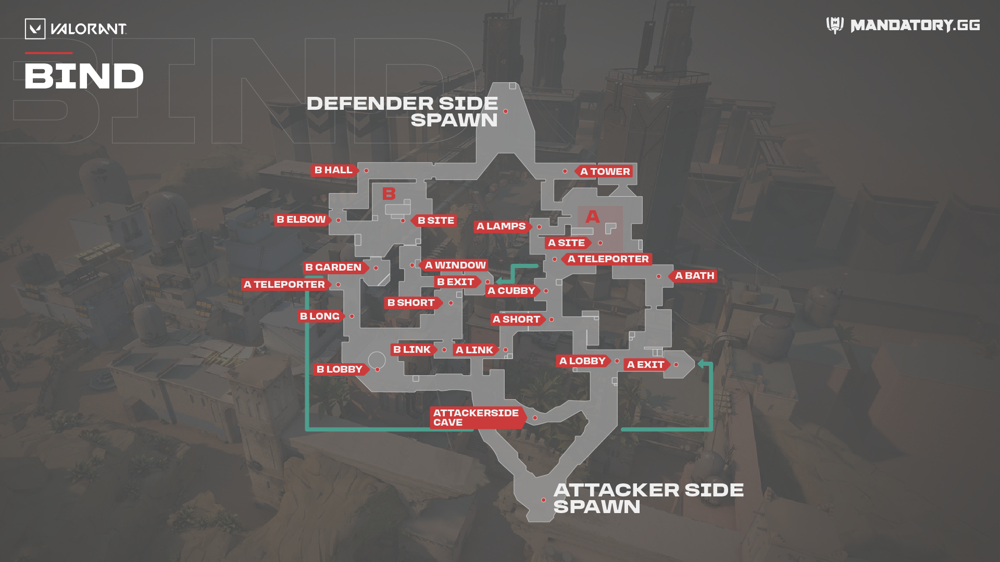
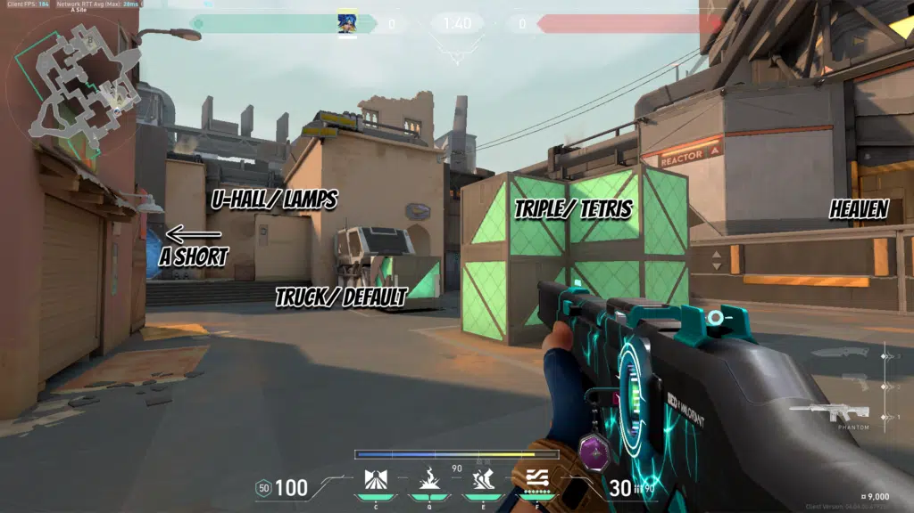
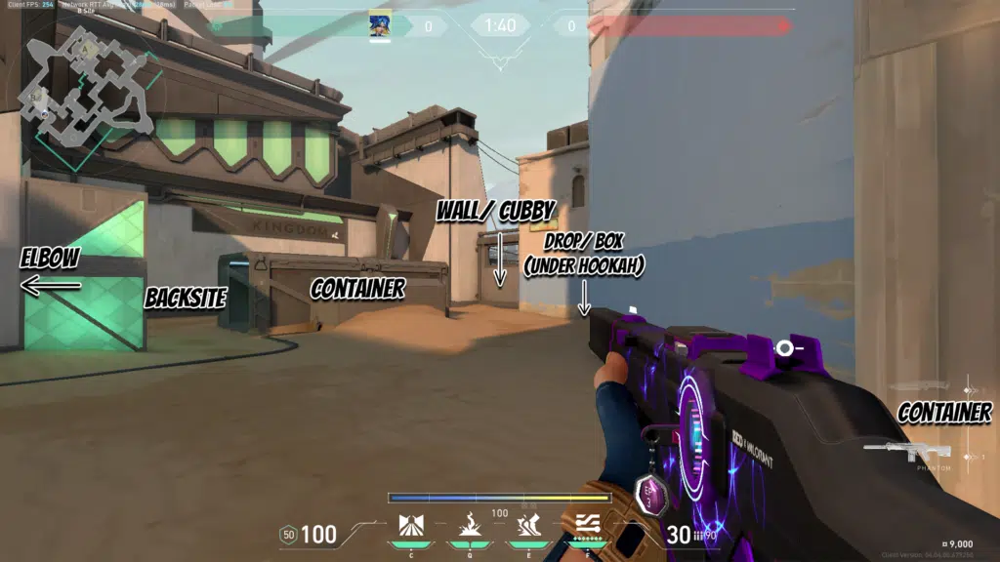

BIND
Bind is a map with two Spike sites. The first, in A, is an open area, protected by many wooden boxes and a high window, suitable for defense with snipers. The second, in B, is located under a metal tunnel, and is not easy to reach.
Its particularity lies in its teleporters, which allow anyone to cross the map back and forth and try to take their opponent by surprise. However, teleporters are very noisy and it's quite easy to punish the ones who take them whether to attack or defend.
MAP TERMINOLOGY
CALLOUTS
A SITE
These are the basic callouts that you should know when it comes to the A Site in Bind. You can also be more specific by adding more precise words such as “back truck,” “inside lamps,” “close triple”, among other things.
B SITE
These are the basic callouts that you have to know when you’re playing on Bind’s B site. These are standard callouts that should easily be understood by anyone who has played the game for a decent amount of time.